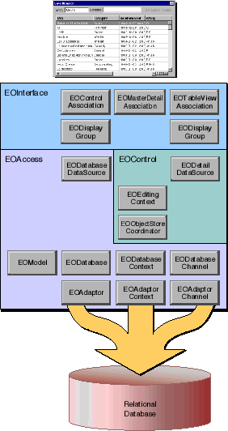

Table of Contents
Table of Contents  Next Section
Table of Contents
Next Section
Table of Contents  Previous Section
Previous Section

Figure 16. Classes in an Application Kit Application
The Interface Layer
The interface layer in an Application Kit application synchronizes data between the application's user interface (Application Kit objects) and the control layer's graph of enterprise objects. The relationship between user interface objects and enterprise objects is managed by EODisplayGroup objects. More precisely, display groups are used by EOAssociation objects to mediate between enterprise objects and the user interface. EOAssociations link a single user interface object to one or more class properties (keys) of the objects managed by a display group. The properties' values are displayed in the association's user interface object. Access and Control Layers
The roles of the access and control layers in an Application Kit application are the same as they are in a command-line application. However, in an Application Kit application, each layer supplies a data source for interacting with the interface layer.
Table of Contents Next Section